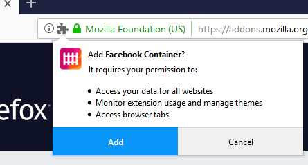
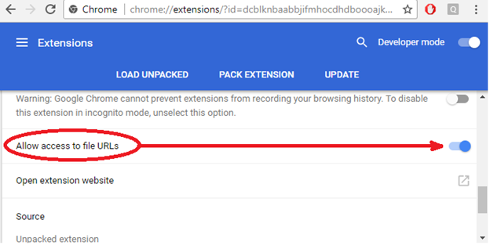

WebExtension security - Part 1
After spending some time now poking at browsers' web content and trying to come up with security concerns within it, I felt I was ready to look at other contexts concerning browsers. This is where my interests for Web Extensions sparked, it gave me a whole bunch of new API's to mess around with and I always wanted to learn how it all worked.
Quick rundown of WebExtension security
I assume we all understand the basic security problems that browsers face as far as web content is concerned. Most of the security issues that web content suffers (Same origin policy violations, XSS, clickjacking and others) apply
to WebExtensions as well. But I would like to focus on the exclusively WebExtension security problems, to do so I will need to explain a few minor things. I suggest you
read MDN on them or take a look at the
source code of a small WebExtension to get a better understanding.
Permissions
All WebExtensions must have a file named
'manifest.json' which contains the meta data of said extension. In this part I will be focusing on the
'permissions' array variable within this file. If you have ever installed an extension,
you may have noticed that a prompt appears first telling you what the capabilities of the to-be-installed extension are.

For example, if you include
'bookmarks' as one of the entries within your WebExtension permissions array then the user will be told before installation that the extension will have access to their bookmarks. With this capability you can programmatically mess around a user's
bookmarks.
Similarly, if you have a permission for
'downloads' you will have the ability to interact with the downloads manager. Of course, you can have both at the same time and the user will be notified of both capabilities before installation.
One can also add a website with certain wildcards. These are according to a
match pattern.
So already you may notice a potential for security concerns. If you have permission for something like
"*://*.example.org/*" then your extension can execute JS on
"https://anything.example.org/anything".
So if you ask for permission for site A and that results in execution on another (doesn't match permission) site B then this is may be security concern. You can also request permission for a file: URI scheme.
The wildcard
'*://' does not include file: URL but only http/s so you must write it explicitly.
Similarly, if you ask for permission for the
"downloads" API and somehow use that to have access to bookmarks (which requires
"bookmarks" permission) then this is also a bug worthy of a report.
Linking restrictions
The most interesting permission is
'<all_urls>', on FireFox this will allow you to execute any JS on any content URL (http/s, file: URI scheme) but
does not allow access to privileged (about:addons) and semi-privileged URLs (more on this later.)
Keep in mind that just because Firefox allows your extension to execute JS within file: URL (with the
'<all_urls>' or 'file://*' permission) does not mean you can open a file: URL programmatically.
A user must manually open a file using the browser and then you may inject JS in it (and by injecting JS into a file: URL you may open other file: URLs through this injection). So if you are able (on Firefox) to programmatically open file: URLs (without relying on the user to open anything for you),
then this is an automatic bug worthy of a bounty.
On Chrome however, you're able to open file: URLs programmatically (with the appropriate match pattern permission) by default. Though you cannot inject JS by default (or with an appropriate match pattern) unless you check the option to do so for the specific WebExtension
as seen below. If you are able to open file: URLs without having the 'Allow access to file URLs' box checked then you have a bug.

This is all you need to be aware of to understand the next bugs I've found. More bugs will be discussed in part 2.
CVE-2018-5113 - launchWebAuthFlow can open privileged pages - Firefox
Using the "identity" permission, we get access to the launchWebAuthFlow function which is used to start an OAuth2 login flow. The following is the JS PoC:
browser.identity.launchWebAuthFlow({
interactive: true,
url: 'about:addons?redirect_uri=http://any'
});
As you may have noticed, the function checked if
'redirect_uri' was appended to the url, otherwise it would throw an error. More importantly, I am simply opening
'about:addons' page (through a new window in this case)
and nothing else is needed beyond that to prove a bug exists. As I mentioned above, Firefox does not allow an extension to open a page like
'about:addons' or local files unless a user first opens a single file URL themselves at least once.
So with this bug I could read entire disk or use it to chain with another bug for other gains.
This part may be confusing because Chrome allows navigations to privileged pages (about: pages) whilst Firefox doesn't. As far as I know, the Mozilla security team believes that it is a risk to allow this because
it can be chained with other vulnerabilities that will result
in a bigger bug.
For example, there may be a bug in WebExtensions that allowed arbitrary JS execution on privileged pages, but you can't automatically open such a page unless the user does so explicitly (about:home is not privileged but semi-privileged, privileged pages
can perform RCE by default.) So this bug here can be used to open such a page and then another bug used to inject code into it resulting in RCE.
Another example of why Firefox disallows opening privileged about: pages is simple: XSS.
I
found an XSS in the
'about:cache' page of the Firefox browser. To trigger this bug, a victim needed to visit two privileged pages.
First, the victim would need to visit the following URL:
about:cache-entry?storage=memory&context=&eid=<svg/onload=alert(location)>&uri=http://aa.com
Secondly, the victim then has to visit this URL:
about:cache?storage=memory&context=
And then our initial entry to the cache in the first step would appear without sanitizing the
'eid' parameter. Unfortunately for me
'about:cache' is not privileged (can't perform RCE) but it still contained a huge amount of private data.
I hope it's clear by now that this XSS would have been useless unless I had another bug which allowed me to open any about: URL I wanted. So all a user needed to do was install my malicious WebExtension which does not ask for any extra permission other than
'identity' and I was able to chain these two bugs to execute JS within
'about:cache.'
CVE-2018-5112 - browser.devtools.panels.create does not ensure panel pagePath is relative URL (Firefox)
This bug allowed me to open any URL (including privileged ones) within the devtools, which required the
'devtools' permission. Less severe as the one before since it requires the user to manually open Devtools.
PoC:
browser.devtools.panels.create(
"My Panel",
"icons/star.png",
"about:about"//<--
).then((newPanel) => {
console.dir(newPanel)
newPanel.onShown.addListener(handleShown);
newPanel.onHidden.addListener(handleHidden);
});
CVE-2018-5134 - Web extensions can open any url using view-source: (Firefox)
The title speaks for itself. As we learned previously, you are not supposed to be able to open about: URLs, but simply appending
'view-source:' at the beginning would bypass these restrictions. This bug required no special permissions, you can open new tabs by default.
PoC:
browser.tabs.create({url:"view-source:about:about"})
CVE-2018-5135 - activeTab permission allows executing scripts on pages it shouldn't (Firefox)
The
'activeTab' permission gives a WebExtension access to the active tab IFF the user interacts with an extension. The user can interact with an extension via three main ways:
1. Clicking the extensions button that is displayed on the top right of Firefox.
2. Clicking a custom context menu (the thing that appears when you right click) button.
3. Activating a keyboard shortcut the extension assigned itself.
In this case, all I did was notice that this functionality did not prohibit the extension from executing JS within
'about:cache' which is a semi-privileged page you are not supposed to be able to access.
I did not add anything unique to it for the bug to work, if memory serves I found it by simply checking if I can take a screenshot of a semi privileged page (using the new Firefox screenshot taker WebExtension.)
To be continued
This writeup is still just the tip of the iceberg, only 4 out of the 20+ bugs I have found within WebExtensions are featured here. Plenty more ground to cover and I am excited to say that I have discovered a chain of bugs that
will lead from HTTP web content to RCE using WebExtensions (and some other unrelated bugs). I will tweet as soon as the bugs have been fixed and when the writeup will come out.
If you have any questions hit me up on Twitter at
@qab.